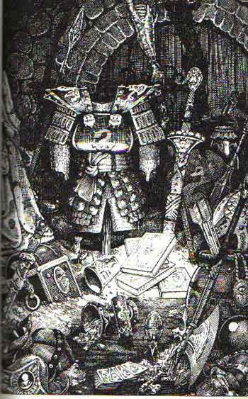
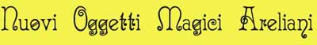

Questa sezione del sito è dedicata interamente agli oggetti magici, al loro metodo di costruzione , alla ricarica e ai nuovi oggetti che esistono unicamente ad Arelia. Si noti che le regole sulla costruzione degli oggetti magici si riferiscono principalmente ai maghi, per i chierici occorre controllare le varie divinità nella sezione dei Culti di Arelia.
|
 |
|

I nuovi oggetti magici areliani sono catalogati per tipologia, cliccate sui link sottostanti per accedere alle varie pagine: